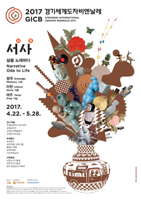

Past Biennale
The 9th Biennale 2017

2017경기세계도자비엔날레에서는 동시대 사회와 문화, 개인과 집단의 삶에 대한 많은 이야기들을 도자를 통해 대중들과 함께 공감하고자 \서사: 삶을 노래하다\를 주제로 세계 도자작품들을 조명하였습니다.
삶에 대한 이야기는 오래 전부터 예술의 주요 모티브가 되어왔으며, 이를 서사하는 양식은 다양하게 전개되어 왔습니다.
도자작품을 통하여 일상과 꿈, 역사, 문화, 정치 등 인간의 실제적인 삶을 탐색함으로서 인간과 도자의 상호관계성을 회복하고, 도자문화의 가치를 새롭게 확립하는 계기를 만들었습니다.
- 기간 : 2017.4.22.(토) ~ 5.28.(일)(37일간)
- 장소 : 이천세라피아, 여주도자세상, 광주 곤지암도자공원
- 주제 : 서사_기억, 기록, 기념
-
전시프로그램
기획전
국제공모전
이천주제전 \기억: 삶을 돌아보다\
여주주제전 \기념: 삶을 기리다\
광주주제전 \기록: 삶을 말하다\특별전
국제장애인도예공모전
특별초청전 \니일 브라운스워드: 팩토리\
특별소장품전 \티웨어: 영국의 오후를 담다\
KOCEF 소장품전 \현대도자의산실\
제5회 아름다운우리도자공모전 -
학술프로그램
국제도자학술회의
도예교육학술세미나
도자컨퍼런스투어 -
워크숍프로그램
국제도자워크숍
CeraMIX유리조형워크숍
광주전통도자워크숍
여주도자워크숍
니일 브라운스워드 특별워크숍 -
부대행사
도자문화이벤트
도자문화교류행사
체험이벤트
제31회 이천도자기축제
제29회 여주도자기축제
제20회 광주왕실도자기축제
프린지페스티벌 및 공연, 마켓